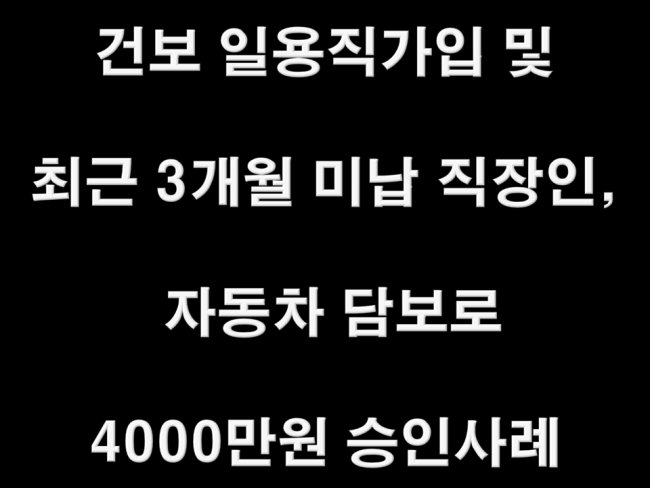
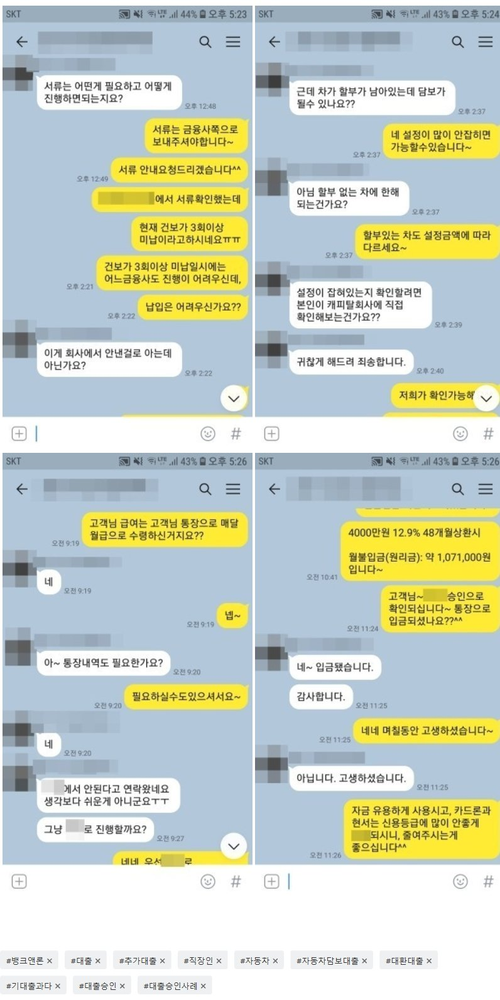

건보 일용직가입 및 최근 3개월미납 직장인, 자동차담보로 4000만원 승인사례!

안녕하세요^^ 뱅크앤론 상담사 유미광 과장입니다^^ 오늘은 제가 진행해드린 김** 고객님의 대출
사례를 소개해 드리겠습니다. 이** 고객님께서는 현 직장에 1년 3개월째 근무중이시며, 월소득 470만
원의 4대보험 가입 직장인이셨습니다. 사용중이신 대출로는 오릭스캐피탈 차할부 4000만원, KB캐피
탈 4800만, 카드론2건으로 각각1000만, 3000만을 이용중이셨습니다. 여유자금이 필요하셔서 경험 많
은 뱅크앤론으로 문의주신다고하셨습니다. 추가 자금이 충분히 가능하실 수 있는 조건같아보였지만, 건
강보험 일용직 신고 및 최근 3개월 미납으로 직장인조건으로는 진행이 많이 어려우신 상황이였습니다.
이에 보유 중인 차량 담보대출로 조회 해 드린 결과, 한 금융사에서 4000만원 12.9%에 진행가능하시다는
결과는 받으셨고, 안전하게 입금까지 되었습니다. 이에 여유자금이 필요하셨던, 김** 고객님께서도 매우
만족하셨습니다. 자세한 사항은 아래 저와 김**고객님의 카톡대화 내용을 참고하실 수 있습니다. 감사합니다^^
